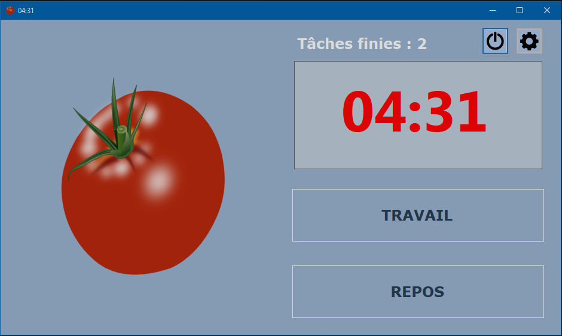

La Technique Pomodoro est une méthode de gestion du temps développée par Francesco Cirillo à la fin des années 1980.
La technique utilise une minuterie pour diviser le travail en intervalles, traditionnellement de 25 minutes, séparés par de courtes pauses de 5 minutes. Ces intervalles sont appelés des pomodoros, le pluriel du mot italien pomodoro (tomate), ce nom viens du minuteur de cuisine en forme de tomate que Cirillo utilisait avec les étudiants.

Cette app fait partie de la série perso d'apprentissage du C#. Elle est fonctionnelle mais elle n'est pas parfaite. Vous avez plus de chances de la faire tourner si vous êtes developpeur C#. Il n'y a pas d'installateur et vous devez construire le projet avec Visual Studio.
Et ceci, a vos risques et périls. Si l'ordinateur n'est pas content il manquera pas de vous le faire savoir. Et s'il prends feu ce n'est qu'une coincidence.
Enjoy.